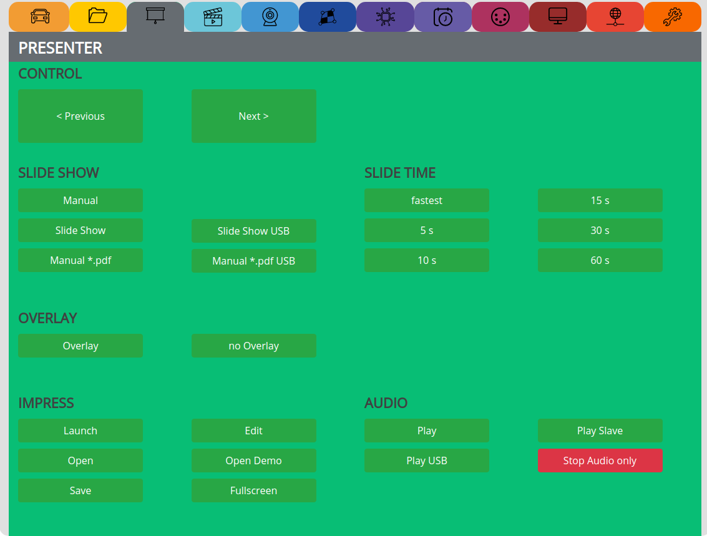

PRESENTER¶
The section for slideshows, pdf and impress presentations:
CONTROL¶
Previous => Manually go to previous
Next => Manually go to next
SLIDE SHOW¶
Manual => Start Manual slideshow to use buttons above
Slide Show => Start automatic slideshow
Manual .pdf => Opens the demo.pdf from /internal/pdf/ folder
Slide Show USB => Plays all images from the root folder of an USB stick
Manual .pdf USB => Opens the demo.pdf from USB stick
SLIDE TIME¶
Define the time until next slide will appear
Note
Do not use empty spaces, special characters and very long filenames.
Rename your images with a short name without any empty spaces or umlauts, you can do this also with the ‘Filename-Fixer’ function.
Note
If you for example use the image viewer to show one specific image, then just delete all other images in the /internal/images folder.
OVERLAY¶
Create an overlay.png with transparency in the /internal/images/ folder and overlay it over the Videoplayer
see video tutorial: